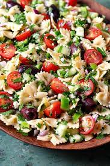

Greek Pasta Salad
This Greek Pasta Salad is easy to prep with cucumbers, cherry tomatoes, bell peppers, red onion, and feta for a
refreshing summer pasta dish. Perfect for picnics and group lunches!
Ingredients
Salad
- 2 cups penne pasta
- 10 cherry tomatoes, halved
- 1 green bell pepper, chopped
- 1 red bell pepper, chopped
- 1 small red onion, chopped
- ½ cucumber, sliced
- ½ cup sliced black olives
- ½ cup crumbled feta cheese
Dressing
- ⅔ cup extra-virgin olive oil
- ¼ cup red wine vinegar
- 2 cloves garlic, crushed
- 1 tablespoon lemon juice
- 2 teaspoons dried oregano
- salt and pepper to taste
Instructuions
- Fill a large pot with lightly salted water and bring to a boil. Stir in pasta of choice and return to a
boil. Cook pasta uncovered, stirring occasionally, until tender yet firm to the bite, about 10 minutes;
rinse with cold water and drain well.
- Wisk olive oil, vinegar, garlic, lemon juice, oregano, salt, and pepper together in a bowl; set aside
- Combine pasta, tomatoes, green and red peppers, onion, cucumber, olives and feta cheese in a large bowl
- Pour vinaigrette over pasta mixture and mix well. Cover and chill for 3 hours before serving.
To view the original recipe, visit allrecipes.com